Limma Backend for prolfqua
Witold E. Wolski
2026-04-10
Source:vignettes/LimmaBackend.Rmd
LimmaBackend.RmdPurpose
This vignette demonstrates the limma backend for
prolfqua’s modelling pipeline. The limma backend is a drop-in
alternative to the per-protein lm + squeezeVar
pipeline. Both approaches fit linear models and perform empirical Bayes
variance shrinkage, but:
-
prolfqua default (
strategy_lm+Contrasts+ContrastsModerated): fits onelm()per protein, then applies prolfqua’s ownsqueezeVarRobmoderation. -
limma backend (
strategy_limma+ContrastsLimma): uses limma’s matrix-basedlmFit+contrasts.fit+eBayespipeline directly.
The user-facing API is identical: same formula specification, same
contrast specification, same downstream methods
(get_contrasts, get_Plotter,
to_wide, merge_contrasts_results).
Data preparation
We use simulated protein-level data with 3 groups (A, B, Ctrl) and some missing values.
library(prolfqua)
library(dplyr)
istar <- sim_lfq_data_protein_config(Nprot = 100, weight_missing = 0.3)
lfqdata <- LFQData$new(istar$data, istar$config)
lfqdata$remove_small_intensities()
lt <- lfqdata$get_Transformer()
transformed <- lt$log2()$robscale()$lfq
transformed$rename_response("transformedIntensity")
transformed$factors()## # A tibble: 12 × 3
## sample sampleName group_
## <chr> <chr> <chr>
## 1 A_V1 A_V1 A
## 2 A_V2 A_V2 A
## 3 A_V3 A_V3 A
## 4 A_V4 A_V4 A
## 5 B_V1 B_V1 B
## 6 B_V2 B_V2 B
## 7 B_V3 B_V3 B
## 8 B_V4 B_V4 B
## 9 Ctrl_V1 Ctrl_V1 Ctrl
## 10 Ctrl_V2 Ctrl_V2 Ctrl
## 11 Ctrl_V3 Ctrl_V3 Ctrl
## 12 Ctrl_V4 Ctrl_V4 CtrlDefine contrasts
The same contrast specification is used for both backends.
contr_spec <- c(
"AvsCtrl" = "group_A - group_Ctrl",
"BvsCtrl" = "group_B - group_Ctrl",
"AvsB" = "group_A - group_B"
)prolfqua default pipeline
mod_lm <- build_model(transformed, strategy_lm("transformedIntensity ~ group_"))
contr_lm <- prolfqua::Contrasts$new(mod_lm, contr_spec)
contr_moderated <- ContrastsModerated$new(contr_lm)
res_moderated <- contr_moderated$get_contrasts()Limma backend pipeline
The only difference is using strategy_limma +
build_model_limma + ContrastsLimma.
strat_limma <- strategy_limma("transformedIntensity ~ group_")
mod_limma <- build_model_limma(transformed, strat_limma)
contr_limma <- ContrastsLimma$new(mod_limma, contr_spec)
res_limma <- contr_limma$get_contrasts()Model-level inspection
The ModelLimma object supports the same inspection
methods as Model.
mod_limma$get_anova() |> head()## # A tibble: 6 × 5
## protein_Id F.value p.value factor FDR
## <chr> <dbl> <dbl> <chr> <dbl>
## 1 0EfVhX~3967 6.37 0.00377 group_B+group_Ctrl 0.0133
## 2 0m5WN4~6025 28.8 0.00000000998 group_B+group_Ctrl 0.000000329
## 3 0YSKpy~2865 1.24 0.298 group_B+group_Ctrl 0.434
## 4 3QLHfm~8938 7.57 0.00146 group_B+group_Ctrl 0.00805
## 5 3QYop0~7543 0.0688 0.934 group_B+group_Ctrl 0.963
## 6 76k03k~7094 3.12 0.0539 group_B+group_Ctrl 0.133
mod_limma$get_coefficients() |> head()## # A tibble: 6 × 6
## protein_Id factor Estimate Std..Error t.value Pr...t..
## <chr> <chr> <dbl> <dbl> <dbl> <dbl>
## 1 0EfVhX~3967 (Intercept) 4.47 0.0359 124. 6.83e-57
## 2 0m5WN4~6025 (Intercept) 4.10 0.0407 101. 6.81e-54
## 3 0YSKpy~2865 (Intercept) 4.16 0.0368 113. 4.05e-56
## 4 3QLHfm~8938 (Intercept) 4.55 0.0340 134. 2.07e-60
## 5 3QYop0~7543 (Intercept) 4.51 0.0350 129. 1.08e-59
## 6 76k03k~7094 (Intercept) 4.67 0.0355 132. 4.16e-60
mod_limma$anova_histogram()## $plot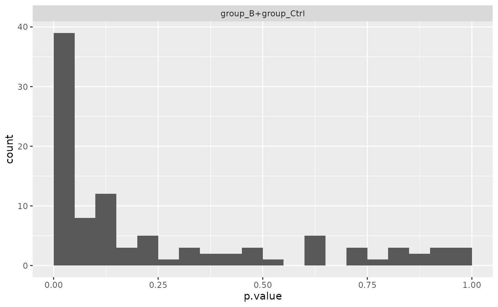
##
## $name
## [1] "Anova_p.values_limma.pdf"Comparing results
Fold changes are identical
Both backends estimate the same linear model, so fold changes (log2 FC) are identical.
merged <- inner_join(
select(res_limma, protein_Id, contrast, diff_limma = diff),
select(res_moderated, protein_Id, contrast, diff_moderated = diff),
by = c("protein_Id", "contrast")
)
cor(merged$diff_limma, merged$diff_moderated, use = "complete.obs")## [1] 1
plot(merged$diff_limma, merged$diff_moderated,
xlab = "limma logFC", ylab = "prolfqua moderated logFC",
pch = 20, col = rgb(0, 0, 0, 0.3))
abline(0, 1, col = "red")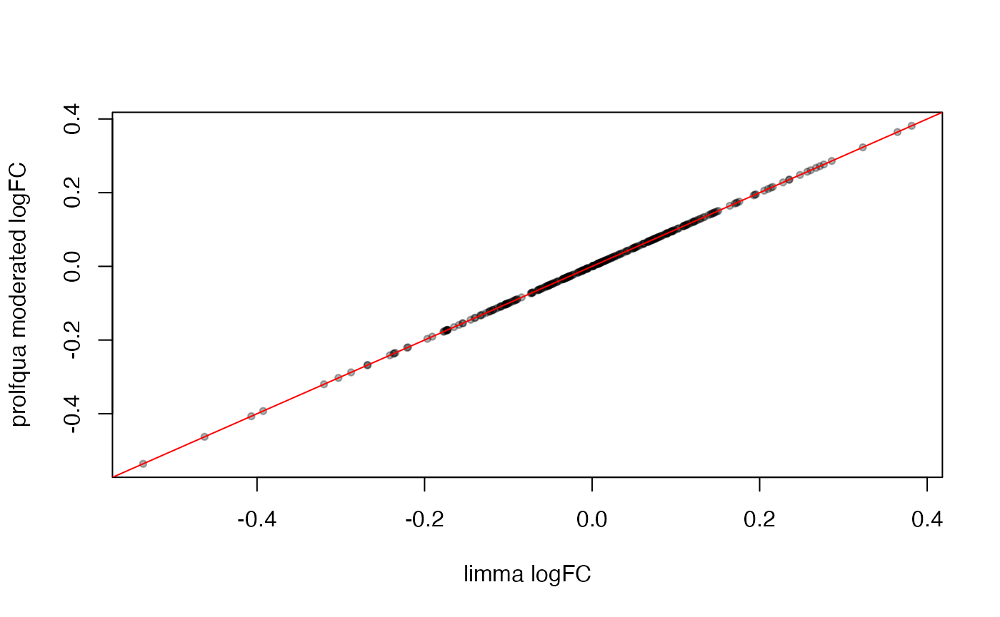
Fold changes: limma vs. prolfqua moderated. Points lie on the diagonal.
P-values differ (different shrinkage)
The p-values differ because limma and prolfqua use different eBayes implementations, but they are highly correlated.
merged_p <- inner_join(
select(res_limma, protein_Id, contrast, p_limma = p.value),
select(res_moderated, protein_Id, contrast, p_moderated = p.value),
by = c("protein_Id", "contrast")
)
cor(-log10(merged_p$p_limma), -log10(merged_p$p_moderated), use = "complete.obs")## [1] 0.984774
plot(-log10(merged_p$p_limma), -log10(merged_p$p_moderated),
xlab = "-log10(p) limma", ylab = "-log10(p) prolfqua moderated",
pch = 20, col = rgb(0, 0, 0, 0.3))
abline(0, 1, col = "red")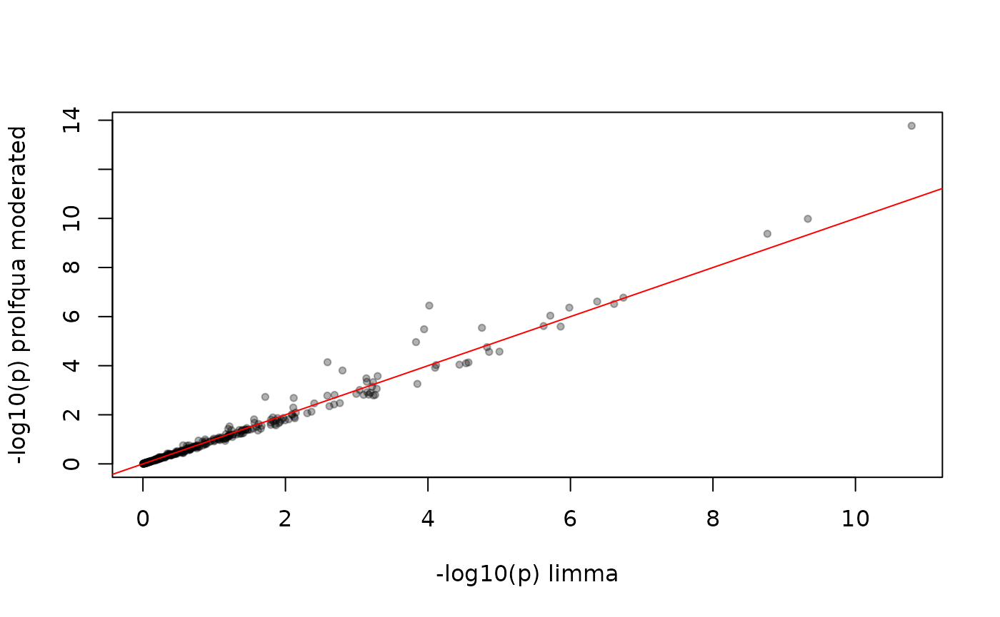
P-values: limma vs. prolfqua moderated. High correlation but not identical.
Volcano plots
pl_limma <- contr_limma$get_Plotter()
pl_moderated <- contr_moderated$get_Plotter()
gridExtra::grid.arrange(
pl_limma$volcano()$FDR + ggplot2::ggtitle("limma"),
pl_moderated$volcano()$FDR + ggplot2::ggtitle("prolfqua moderated"),
ncol = 1
)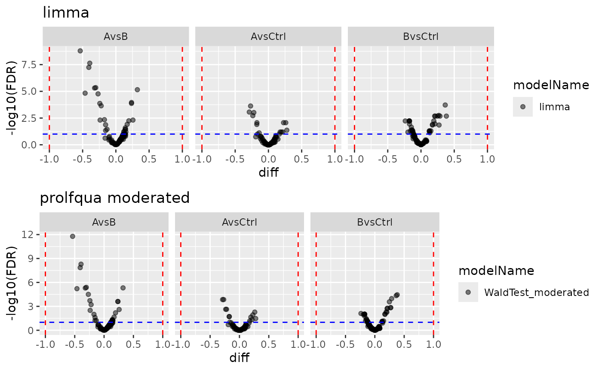
Volcano plots from both backends.
Merging with missing value imputation
ContrastsLimma integrates seamlessly with
ContrastsMissing and
merge_contrasts_results.
mC <- ContrastsMissing$new(lfqdata = transformed, contrasts = contr_spec)
merged_result <- merge_contrasts_results(prefer = contr_limma, add = mC)
plotter <- merged_result$merged$get_Plotter()
plotter$volcano()$FDR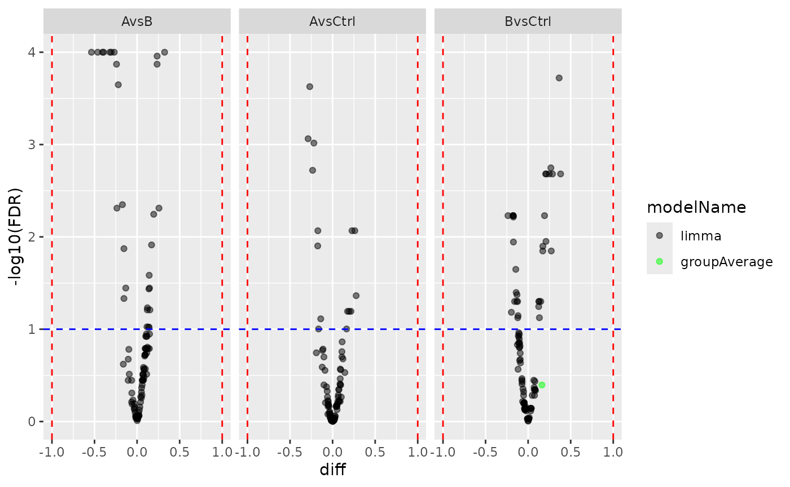
Wide format export
wide <- contr_limma$to_wide()
head(wide)## # A tibble: 6 × 13
## protein_Id diff.AvsCtrl diff.BvsCtrl diff.AvsB p.value.AvsCtrl p.value.BvsCtrl
## <chr> <dbl> <dbl> <dbl> <dbl> <dbl>
## 1 0EfVhX~39… 0.0875 -0.108 0.195 0.118 0.0555
## 2 0m5WN4~60… -0.235 0.172 -0.407 0.0000768 0.00258
## 3 0YSKpy~28… 0.00148 -0.0703 0.0718 0.979 0.202
## 4 3QLHfm~89… -0.0343 -0.177 0.142 0.480 0.000641
## 5 3QYop0~75… -0.0180 -0.00598 -0.0120 0.717 0.904
## 6 76k03k~70… 0.0169 -0.0991 0.116 0.738 0.0544
## # ℹ 7 more variables: p.value.AvsB <dbl>, FDR.AvsCtrl <dbl>, FDR.BvsCtrl <dbl>,
## # FDR.AvsB <dbl>, statistic.AvsCtrl <dbl>, statistic.BvsCtrl <dbl>,
## # statistic.AvsB <dbl>Two-factor design
The limma backend handles multi-factor designs in the same way.
dd <- sim_lfq_data_2factor_config(Nprot = 100, with_missing = FALSE)
lProt2 <- LFQData$new(dd$data, dd$config)
lProt2$rename_response("transformedIntensity")
strat2 <- strategy_limma("transformedIntensity ~ Treatment + Background")
mod2 <- build_model_limma(lProt2, strat2)
Contr2 <- c(
"A_vs_B" = "TreatmentA - TreatmentB",
"X_vs_Z" = "BackgroundX - BackgroundZ"
)
contr2 <- ContrastsLimma$new(mod2, Contr2)
pl2 <- contr2$get_Plotter()
pl2$volcano()$FDR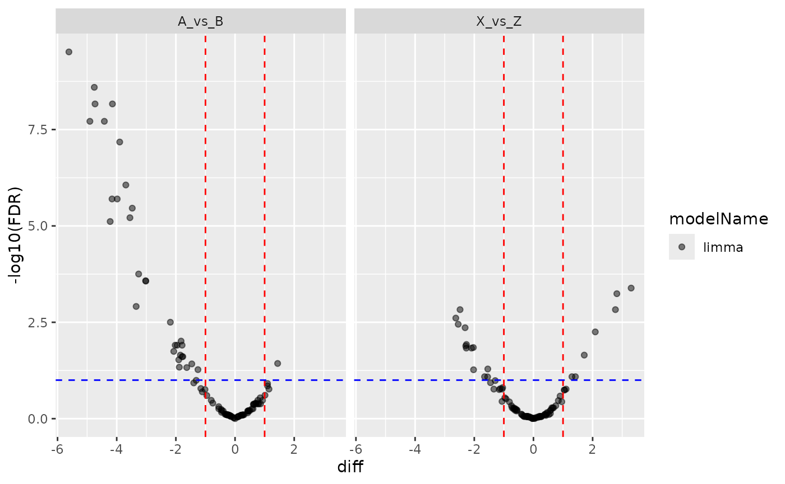
strategy_limma options
The strategy_limma function accepts trend
and robust arguments that are passed to
limma::eBayes:
-
trend = TRUE: allows the prior variance to depend on average intensity (useful when variance is intensity-dependent) -
robust = TRUE: uses a robust empirical Bayes procedure (resistant to outlier variances)
strat_robust <- strategy_limma(
"transformedIntensity ~ group_",
trend = TRUE,
robust = TRUE
)
mod_robust <- build_model_limma(transformed, strat_robust)
contr_robust <- ContrastsLimma$new(mod_robust, contr_spec)
head(contr_robust$get_contrasts())## # A tibble: 6 × 13
## modelName protein_Id contrast diff FDR std.error statistic p.value
## <chr> <chr> <chr> <dbl> <dbl> <dbl> <dbl> <dbl>
## 1 limma 0EfVhX~3967 AvsCtrl 0.0875 0.400 0.0551 1.59 0.113
## 2 limma 0m5WN4~6025 AvsCtrl -0.235 0.000672 0.0569 -4.13 0.0000408
## 3 limma 0YSKpy~2865 AvsCtrl 0.00148 0.992 0.0641 0.0230 0.982
## 4 limma 3QLHfm~8938 AvsCtrl -0.0343 0.778 0.0476 -0.721 0.471
## 5 limma 3QYop0~7543 AvsCtrl -0.0180 0.931 0.0475 -0.380 0.704
## 6 limma 76k03k~7094 AvsCtrl 0.0169 0.931 0.0447 0.378 0.706
## # ℹ 5 more variables: sigma <dbl>, df <dbl>, conf.low <dbl>, conf.high <dbl>,
## # avgAbd <dbl>Vooma backend pipeline
The vooma (variance modelling at the observational level) backend extends limma with observation-level precision weights derived from a mean-variance trend. This is analogous to voom for RNA-seq but applied to proteomics intensities. The key idea: instead of assuming equal variance across all observations, vooma estimates a smooth mean-variance relationship and down-weights observations with higher expected variance.
The API mirrors the standard limma pipeline — the only difference is
calling build_model_limma_voom instead of
build_model_limma.
strat_voom <- strategy_limma("transformedIntensity ~ group_")
mod_voom <- build_model_limma_voom(transformed, strat_voom, plot = TRUE)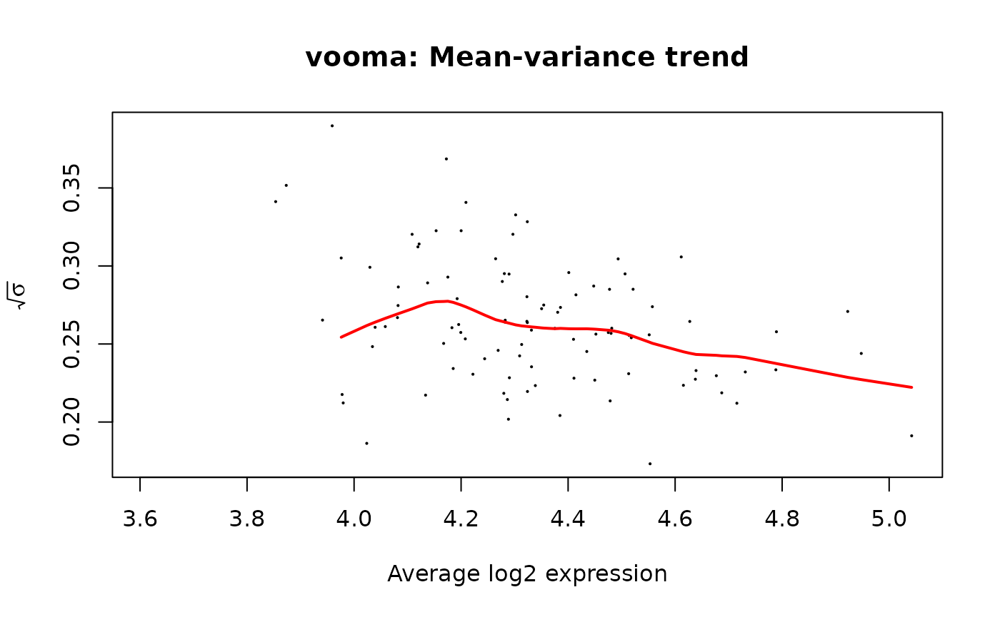
contr_voom <- ContrastsLimma$new(mod_voom, contr_spec)
res_voom <- contr_voom$get_contrasts()The plot shows sqrt(sigma) vs average log-expression.
The red curve is the lowess trend used to derive per-observation
weights.
Comparing limma vs vooma
merged_voom <- inner_join(
select(res_limma, protein_Id, contrast, p_limma = p.value, diff_limma = diff),
select(res_voom, protein_Id, contrast, p_voom = p.value, diff_voom = diff),
by = c("protein_Id", "contrast")
)
data.frame(
Metric = c("Fold-change correlation", "P-value correlation"),
Value = c(
cor(merged_voom$diff_limma, merged_voom$diff_voom, use = "complete.obs"),
cor(-log10(merged_voom$p_limma), -log10(merged_voom$p_voom), use = "complete.obs")
)
) |> knitr::kable(digits = 4)| Metric | Value |
|---|---|
| Fold-change correlation | 1.0000 |
| P-value correlation | 0.9886 |
pl_voom <- contr_voom$get_Plotter()
gridExtra::grid.arrange(
pl_limma$volcano()$FDR + ggplot2::ggtitle("limma"),
pl_voom$volcano()$FDR + ggplot2::ggtitle("vooma"),
ncol = 1
)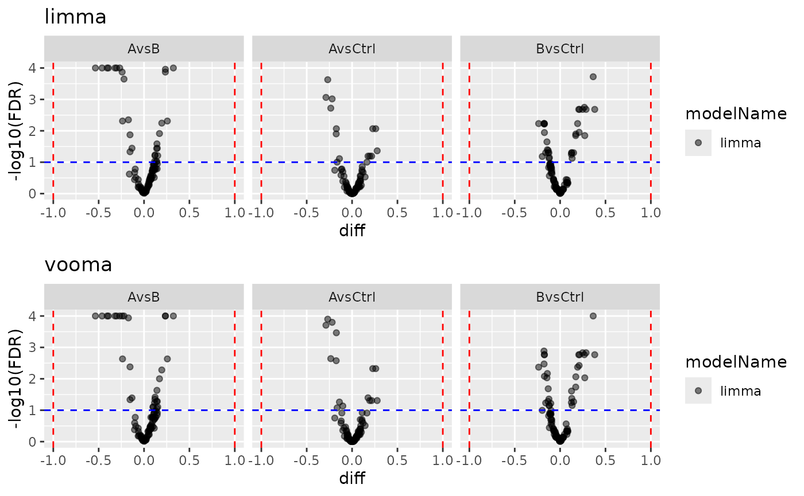
Volcano plots: limma vs vooma.
Limpa backend pipeline
The limpa backend uses limpa’s Detection Probability Curve (DPC) for probabilistic missing value handling, followed by vooma precision weighting that incorporates the quantification standard errors. The three-step pipeline is:
-
AggregateLimpa— estimates the DPC, then quantifies features usinglimpa::dpcQuant()(peptide→protein) orlimpa::dpcQuantByRow()(same-level imputation). Produces standard errors and observation counts. -
build_model_limpa— fits a vooma model usinglimpa::voomaLmFitWithImputation()with the SEs as a bivariate predictor -
ContrastsLimma— reused as-is since the output is a standardMArrayLM
We show two examples: aggregation to protein level and staying at peptide level.
Prepare peptide-level data
Both examples start from the same simulated peptide-level dataset.
istar_pep <- sim_lfq_data_peptide_config(Nprot = 100)
lfq_peptide <- LFQData$new(istar_pep$data, istar_pep$config)
lfq_peptide <- lfq_peptide$get_Transformer()$log2()$lfq
data.frame(
Property = c("Hierarchy", "Samples", "NAs"),
Value = c(
paste(lfq_peptide$config$hierarchy_keys(), collapse = " > "),
length(unique(lfq_peptide$data[[lfq_peptide$config$sample_name]])),
sum(is.na(lfq_peptide$data[[lfq_peptide$config$get_response()]]))
)
) |> knitr::kable()| Property | Value |
|---|---|
| Hierarchy | protein_Id > peptide_Id |
| Samples | 12 |
| NAs | 528 |
Example 1: Peptide → protein aggregation
Step 1: Aggregate with AggregateLimpa
AggregateLimpa wraps limpa::dpc() (DPC
estimation) and limpa::dpcQuant() (protein quantification).
The output is a protein-level LFQData with three value
columns: intensity, standard error (config$opt_se), and
observation count (config$nr_children). Missing values are
probabilistically integrated out during quantification — no fabricated
numbers are imputed.
agg <- AggregateLimpa$new(lfq_peptide, "protein")
lfq_protein_limpa <- agg$aggregate()
data.frame(
Property = c("Input hierarchy", "Output hierarchy", "Response column",
"SE column", "Nr children column", "NAs in output",
"DPC beta0", "DPC beta1"),
Value = c(
paste(lfq_peptide$config$hierarchy_keys(), collapse = " > "),
paste(lfq_protein_limpa$config$hierarchy_keys(), collapse = " > "),
lfq_protein_limpa$config$get_response(),
lfq_protein_limpa$config$opt_se,
lfq_protein_limpa$config$nr_children,
sum(is.na(lfq_protein_limpa$data[[lfq_protein_limpa$config$get_response()]])),
round(agg$dpc_result$dpc[1], 3),
round(agg$dpc_result$dpc[2], 3)
)
) |> knitr::kable()| Property | Value |
|---|---|
| Input hierarchy | protein_Id > peptide_Id |
| Output hierarchy | protein_Id |
| Response column | limpa |
| SE column | limpa_se |
| Nr children column | nr_children_protein_Id |
| NAs in output | 0 |
| DPC beta0 | -2.372 |
| DPC beta1 | 1 |
Step 2: Build model with build_model_limpa
build_model_limpa extracts the SE and observation count
matrices from the aggregated data and passes them to
limpa::voomaLmFitWithImputation(). The SEs serve as a
second predictor in the vooma variance trend (bivariate: average
intensity + log SE), and the observation counts identify imputed entries
for degree-of-freedom correction.
response <- lfq_protein_limpa$config$get_response()
strat_limpa <- strategy_limpa(paste(response, "~ group_"), plot = TRUE)
mod_limpa_prot <- build_model_limpa(lfq_protein_limpa, strat_limpa)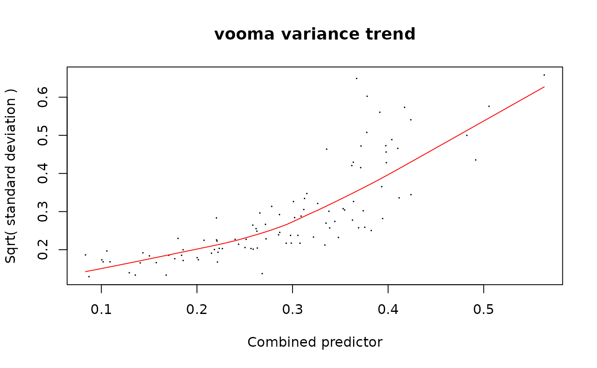
data.frame(
Property = c("Model class", "Model name"),
Value = c(class(mod_limpa_prot)[1], mod_limpa_prot$model_name)
) |> knitr::kable()| Property | Value |
|---|---|
| Model class | ModelLimma |
| Model name | limpa |
| protein_Id | factor | Estimate | Std..Error | t.value | Pr…t.. |
|---|---|---|---|---|---|
| 0EfVhX~3967 | (Intercept) | 4.566 | 0.032 | 140.675 | 0 |
| 0m5WN4~6025 | (Intercept) | 4.270 | 0.022 | 196.778 | 0 |
| 0YSKpy~2865 | (Intercept) | 4.061 | 0.048 | 85.005 | 0 |
| 3QLHfm~8938 | (Intercept) | 4.652 | 0.034 | 135.632 | 0 |
| 3QYop0~7543 | (Intercept) | 4.564 | 0.014 | 331.068 | 0 |
| 76k03k~7094 | (Intercept) | 4.539 | 0.014 | 314.082 | 0 |
Step 3: Compute contrasts with ContrastsLimma
Since build_model_limpa returns a standard
ModelLimma, we reuse ContrastsLimma directly —
same as for the limma and vooma backends.
contr_limpa_prot <- ContrastsLimma$new(mod_limpa_prot, contr_spec, model_name = "limpa")
res_limpa_prot <- contr_limpa_prot$get_contrasts()
head(res_limpa_prot) |> knitr::kable(digits = 3)| modelName | protein_Id | contrast | diff | FDR | std.error | statistic | p.value | sigma | df | conf.low | conf.high | avgAbd |
|---|---|---|---|---|---|---|---|---|---|---|---|---|
| limpa | 0EfVhX~3967 | AvsCtrl | 0.188 | 0.005 | 0.056 | 3.353 | 0.002 | 0.772 | 25.515 | 0.073 | 0.303 | 4.472 |
| limpa | 0m5WN4~6025 | AvsCtrl | 0.078 | 0.033 | 0.032 | 2.418 | 0.023 | 0.855 | 25.515 | 0.012 | 0.145 | 4.231 |
| limpa | 0YSKpy~2865 | AvsCtrl | -0.125 | 0.059 | 0.059 | -2.108 | 0.045 | 0.968 | 25.515 | -0.247 | -0.003 | 4.124 |
| limpa | 3QLHfm~8938 | AvsCtrl | 0.233 | 0.011 | 0.080 | 2.929 | 0.007 | 0.927 | 25.515 | 0.069 | 0.397 | 4.535 |
| limpa | 3QYop0~7543 | AvsCtrl | -0.133 | 0.000 | 0.018 | -7.379 | 0.000 | 0.887 | 25.515 | -0.170 | -0.096 | 4.630 |
| limpa | 76k03k~7094 | AvsCtrl | -0.112 | 0.000 | 0.019 | -5.814 | 0.000 | 0.966 | 25.515 | -0.151 | -0.072 | 4.595 |
Volcano plot
pl_limpa_prot <- contr_limpa_prot$get_Plotter()
pl_limpa_prot$volcano()$FDR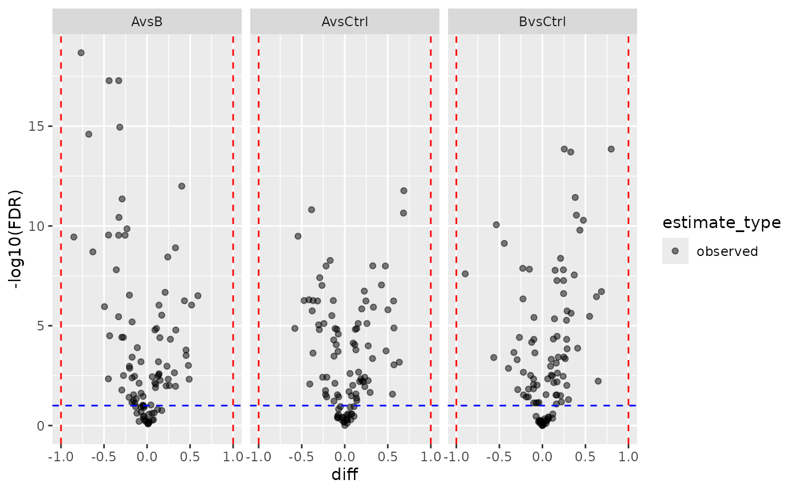
Limpa protein-level volcano plot.
Facade shortcut
The same pipeline is available as a one-liner via
build_contrast_analysis(method = "limpa"). The input must
be AggregateLimpa output (not plain
get_Aggregator() output), because the facade needs the SE
and observation count columns.
fa_limpa_prot <- build_contrast_analysis(
lfq_protein_limpa, "~ group_", contr_spec, method = "limpa"
)
fa_limpa_prot$get_contrasts() |> head() |> knitr::kable(digits = 3)| facade | modelName | protein_Id | contrast | diff | FDR | std.error | statistic | p.value | sigma | df | conf.low | conf.high | avgAbd |
|---|---|---|---|---|---|---|---|---|---|---|---|---|---|
| limpa | limpa | 0EfVhX~3967 | AvsCtrl | 0.188 | 0.005 | 0.056 | 3.353 | 0.002 | 0.772 | 25.515 | 0.073 | 0.303 | 4.472 |
| limpa | limpa | 0m5WN4~6025 | AvsCtrl | 0.078 | 0.033 | 0.032 | 2.418 | 0.023 | 0.855 | 25.515 | 0.012 | 0.145 | 4.231 |
| limpa | limpa | 0YSKpy~2865 | AvsCtrl | -0.125 | 0.059 | 0.059 | -2.108 | 0.045 | 0.968 | 25.515 | -0.247 | -0.003 | 4.124 |
| limpa | limpa | 3QLHfm~8938 | AvsCtrl | 0.233 | 0.011 | 0.080 | 2.929 | 0.007 | 0.927 | 25.515 | 0.069 | 0.397 | 4.535 |
| limpa | limpa | 3QYop0~7543 | AvsCtrl | -0.133 | 0.000 | 0.018 | -7.379 | 0.000 | 0.887 | 25.515 | -0.170 | -0.096 | 4.630 |
| limpa | limpa | 76k03k~7094 | AvsCtrl | -0.112 | 0.000 | 0.019 | -5.814 | 0.000 | 0.966 | 25.515 | -0.151 | -0.072 | 4.595 |
Example 2: Peptide-level analysis (no aggregation)
In this example we stay at the peptide level.
AggregateLimpa with impute_only = TRUE calls
limpa::dpcQuantByRow(), which fills in missing values at
the peptide level while preserving the full hierarchy. Each peptide row
is treated as its own “protein” (one peptide per group). The output has
the same hierarchy as the input but with no NAs and with SE and
observation count columns attached.
This is useful for peptidoform-level analyses (e.g. PTMs) where aggregation to protein level is not desired.
Step 1: Impute at peptide level
agg_pep <- AggregateLimpa$new(lfq_peptide, impute_only = TRUE)
lfq_peptide_limpa <- agg_pep$aggregate()
data.frame(
Property = c("Input hierarchy", "Output hierarchy",
"NAs in input", "NAs in output", "SE column"),
Value = c(
paste(lfq_peptide$config$hierarchy_keys(), collapse = " > "),
paste(lfq_peptide_limpa$config$hierarchy_keys(), collapse = " > "),
sum(is.na(lfq_peptide$data[[lfq_peptide$config$get_response()]])),
sum(is.na(lfq_peptide_limpa$data[[lfq_peptide_limpa$config$get_response()]])),
lfq_peptide_limpa$config$opt_se
)
) |> knitr::kable()| Property | Value |
|---|---|
| Input hierarchy | protein_Id > peptide_Id |
| Output hierarchy | protein_Id > peptide_Id |
| NAs in input | 528 |
| NAs in output | 0 |
| SE column | limpa_se |
Step 2: Build model at peptide level
The peptide-level data still has protein_Id and
peptide_Id in its hierarchy. We set
hierarchyDepth so that hierarchy_keys()
returns only protein_Id — this makes the data “aggregated”
from the model’s perspective (one row per protein_Id × peptide_Id ×
sample, with subject_id = protein_Id).
Since each peptide is a separate row in the wide matrix,
build_model_limpa fits the model at the peptide level.
response_pep <- lfq_peptide_limpa$config$get_response()
strat_limpa_pep <- strategy_limpa(paste(response_pep, "~ group_"), plot = TRUE)
mod_limpa_pep <- build_model_limpa(lfq_peptide_limpa, strat_limpa_pep)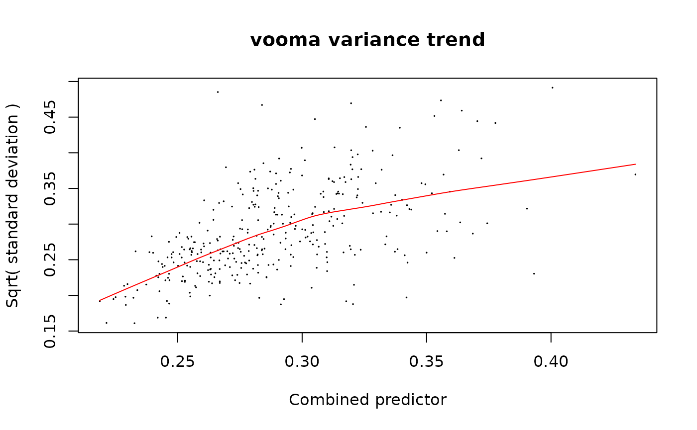
data.frame(
Property = c("Model class", "Rows in model (peptides)"),
Value = c(class(mod_limpa_pep)[1], nrow(mod_limpa_pep$fit$coefficients))
) |> knitr::kable()| Property | Value |
|---|---|
| Model class | ModelLimma |
| Rows in model (peptides) | 350 |
Step 3: Compute contrasts
contr_limpa_pep <- ContrastsLimma$new(mod_limpa_pep, contr_spec, model_name = "limpa_peptide")
res_limpa_pep <- contr_limpa_pep$get_contrasts()
data.frame(
Property = c("Peptide-level results", "Unique peptides"),
Value = c(nrow(res_limpa_pep), length(unique(res_limpa_pep$peptide_Id)))
) |> knitr::kable()| Property | Value |
|---|---|
| Peptide-level results | 1050 |
| Unique peptides | 350 |
| modelName | protein_Id | peptide_Id | contrast | diff | FDR | std.error | statistic | p.value | sigma | df | conf.low | conf.high | avgAbd |
|---|---|---|---|---|---|---|---|---|---|---|---|---|---|
| limpa_peptide | 0EfVhX~3967 | IIhYJDAe | AvsCtrl | 0.234 | 0.000 | 0.046 | 5.086 | 0.000 | 1.047 | 35.777 | 0.141 | 0.327 | 4.545 |
| limpa_peptide | 0EfVhX~3967 | SWkbauTR | AvsCtrl | 0.156 | 0.021 | 0.061 | 2.562 | 0.015 | 1.208 | 35.777 | 0.033 | 0.280 | 4.393 |
| limpa_peptide | 0m5WN4~6025 | 7uKIY8WX | AvsCtrl | -0.430 | 0.000 | 0.067 | -6.396 | 0.000 | 1.164 | 35.777 | -0.566 | -0.293 | 4.041 |
| limpa_peptide | 0m5WN4~6025 | 7xDNA2B6 | AvsCtrl | 0.272 | 0.000 | 0.061 | 4.485 | 0.000 | 1.069 | 35.777 | 0.149 | 0.395 | 4.187 |
| limpa_peptide | 0m5WN4~6025 | KT0ROM7b | AvsCtrl | 0.697 | 0.000 | 0.058 | 11.988 | 0.000 | 1.071 | 35.777 | 0.579 | 0.815 | 4.186 |
| limpa_peptide | 0m5WN4~6025 | LYLauRlr | AvsCtrl | -0.413 | 0.000 | 0.049 | -8.470 | 0.000 | 1.108 | 35.777 | -0.512 | -0.314 | 4.553 |
Volcano plot
pl_limpa_pep <- contr_limpa_pep$get_Plotter()
pl_limpa_pep$volcano()$FDR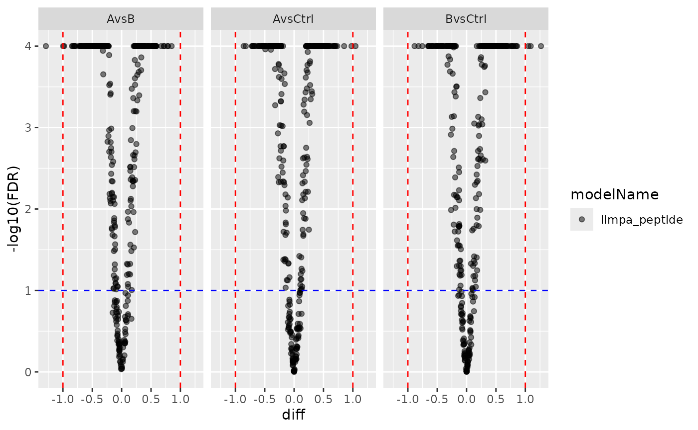
Limpa peptide-level volcano plot.
Comparison: protein-level vs peptide-level limpa
data.frame(
Level = c("Protein", "Peptide"),
Rows = c(nrow(res_limpa_prot), nrow(res_limpa_pep)),
Proteins = c(length(unique(res_limpa_prot$protein_Id)),
length(unique(res_limpa_pep$protein_Id))),
Peptides = c(NA_integer_, length(unique(res_limpa_pep$peptide_Id)))
) |> knitr::kable()| Level | Rows | Proteins | Peptides |
|---|---|---|---|
| Protein | 300 | 100 | NA |
| Peptide | 1050 | 100 | 350 |
Session Info
## R version 4.5.2 (2025-10-31)
## Platform: x86_64-pc-linux-gnu
## Running under: Ubuntu 24.04.4 LTS
##
## Matrix products: default
## BLAS: /usr/lib/x86_64-linux-gnu/openblas-pthread/libblas.so.3
## LAPACK: /usr/lib/x86_64-linux-gnu/openblas-pthread/libopenblasp-r0.3.26.so; LAPACK version 3.12.0
##
## locale:
## [1] LC_CTYPE=C.UTF-8 LC_NUMERIC=C LC_TIME=C.UTF-8
## [4] LC_COLLATE=C.UTF-8 LC_MONETARY=C.UTF-8 LC_MESSAGES=C.UTF-8
## [7] LC_PAPER=C.UTF-8 LC_NAME=C LC_ADDRESS=C
## [10] LC_TELEPHONE=C LC_MEASUREMENT=C.UTF-8 LC_IDENTIFICATION=C
##
## time zone: UTC
## tzcode source: system (glibc)
##
## attached base packages:
## [1] stats graphics grDevices utils datasets methods base
##
## other attached packages:
## [1] dplyr_1.2.1 prolfqua_1.6.1
##
## loaded via a namespace (and not attached):
## [1] tidyselect_1.2.1 viridisLite_0.4.3 farver_2.1.2
## [4] S7_0.2.1 fastmap_1.2.0 lazyeval_0.2.3
## [7] digest_0.6.39 rpart_4.1.24 lifecycle_1.0.5
## [10] survival_3.8-3 statmod_1.5.1 magrittr_2.0.5
## [13] compiler_4.5.2 progress_1.2.3 rlang_1.2.0
## [16] sass_0.4.10 tools_4.5.2 utf8_1.2.6
## [19] yaml_2.3.12 data.table_1.18.2.1 limpa_1.2.5
## [22] knitr_1.51 labeling_0.4.3 prettyunits_1.2.0
## [25] htmlwidgets_1.6.4 plyr_1.8.9 RColorBrewer_1.1-3
## [28] withr_3.0.2 purrr_1.2.1 desc_1.4.3
## [31] nnet_7.3-20 grid_4.5.2 jomo_2.7-6
## [34] mice_3.19.0 ggplot2_4.0.2 scales_1.4.0
## [37] iterators_1.0.14 MASS_7.3-65 cli_3.6.6
## [40] crayon_1.5.3 UpSetR_1.4.0 rmarkdown_2.31
## [43] ragg_1.5.2 reformulas_0.4.4 generics_0.1.4
## [46] otel_0.2.0 httr_1.4.8 minqa_1.2.8
## [49] cachem_1.1.0 operator.tools_1.6.3.1 splines_4.5.2
## [52] vctrs_0.7.2 boot_1.3-32 glmnet_4.1-10
## [55] Matrix_1.7-4 jsonlite_2.0.0 hms_1.1.4
## [58] mitml_0.4-5 ggrepel_0.9.8 systemfonts_1.3.2
## [61] foreach_1.5.2 limma_3.66.0 plotly_4.12.0
## [64] tidyr_1.3.2 jquerylib_0.1.4 glue_1.8.0
## [67] pkgdown_2.2.0 nloptr_2.2.1 pan_1.9
## [70] codetools_0.2-20 stringi_1.8.7 shape_1.4.6.1
## [73] gtable_0.3.6 lme4_2.0-1 tibble_3.3.1
## [76] pillar_1.11.1 htmltools_0.5.9 R6_2.6.1
## [79] textshaping_1.0.5 Rdpack_2.6.6 formula.tools_1.7.1
## [82] evaluate_1.0.5 lattice_0.22-7 rbibutils_2.4.1
## [85] backports_1.5.1 pheatmap_1.0.13 broom_1.0.12
## [88] bslib_0.10.0 Rcpp_1.1.1 gridExtra_2.3
## [91] nlme_3.1-168 mgcv_1.9-3 logistf_1.26.1
## [94] xfun_0.57 fs_2.0.1 forcats_1.0.1
## [97] pkgconfig_2.0.3